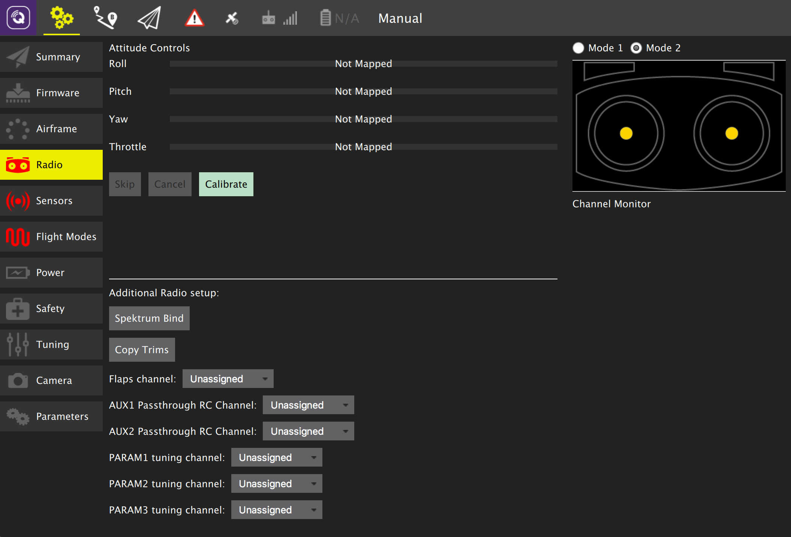

Radio Setup
 Note: Image shown is from PX4 Pro firmware vehicle. Main Radio Setup is common to both firwares. Additional Radio Setup differs between firmwares.
Radio Setup is used to configure the mapping of your main attitude control sticks to channels as well as calibrate the settings for all rc channels.
To start radio calibration click the Calibrate button. You will be asked to move the sticks in a specific pattern. The image on the top right of the screen will also show you how to move the sticks. Simply follow the instructions to complete calibration.
After calibration is complete the mappings for Roll, Pitch, Raw and Throttle will be set. Also the min, max, trim and reverse settings will be configured automatically for all channels.
Additional Radio Setup
Below the top most calibration portion of the screen are additional radio based settings which are specific to the firmware your vehicle is using.